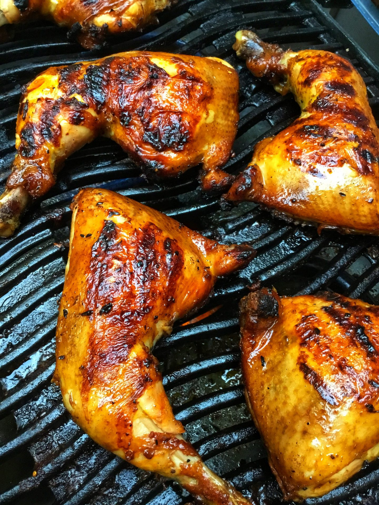

Airfry Chicken Inasal
Chicken inasal, commonly known simply as inasal, is a variant of the Filipino chicken dish known as lechon manok.
Equipment
- Airfryer
Ingredients
- 500g Chicken breast or thigh
Marinade ingredients
- 1 thumb size Ginger (grated)
- 1 stalk Lemongrass base chopped
- 3 tbsp Annatto Oil
- 3 tbsp Brown Sugar
- 3 tbsp Coconut Vinegar
- 1 pinch Salt
- 1/2 tsp Peppercorn crushed
Basting ingredients
- 3 tbsp Annatto Oil
- 1 tbsp Butter (melted)
- 1 pinch Salt
Dipping sauce
- 2 tbsp Soy sauce
- 2 tbsp Coconut Vinegar
- 1 tbsp Calamansi Juice (or Lemon Squeeze)
- 1 pc Bird's eye chili (optional)
Instructions
- Combine all marinade ingredients (except chicken) in small bowl. Mixed well
- Pour the marinade mixture into ziploc with chicken. Shake the bag then marinade at least 4 hours. I recommended to marinade for 24 hours.
- Combine all basting ingredients and. Mixed well
- Baste the chicken both sides.Put an aluminum foil on the airfryer rack and arrange the marinade chicken.
- Preheat airfryer 180 C for 3 minutes. Airfry 180 C to 20 minutes.
- Baste again the chicken on both sides halfway through cooking time.
- Serve with steam rice and soy sauce/ vinegar dipping.